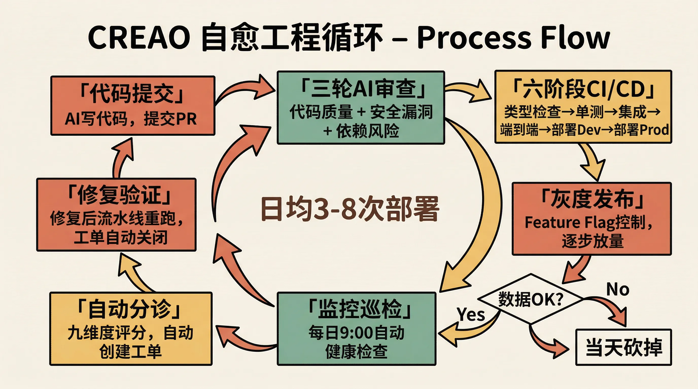
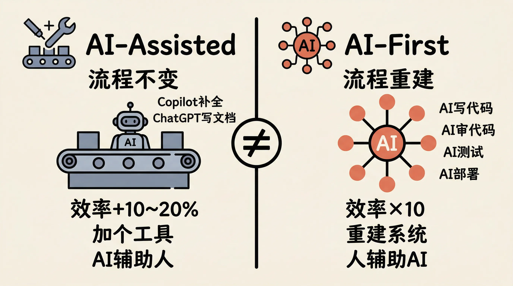
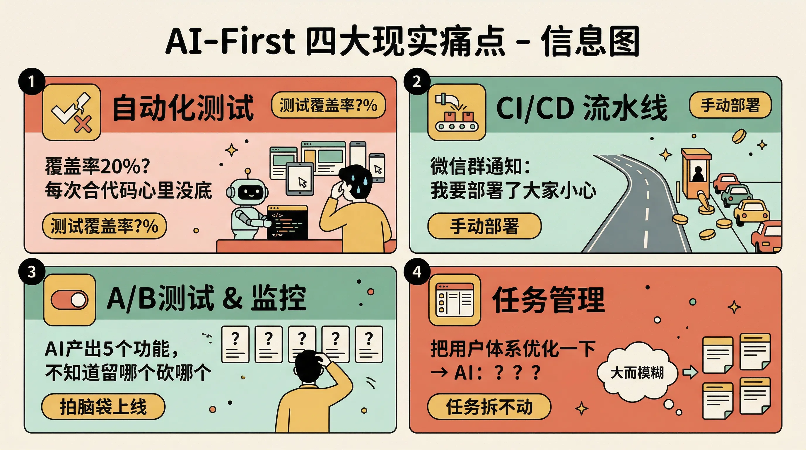
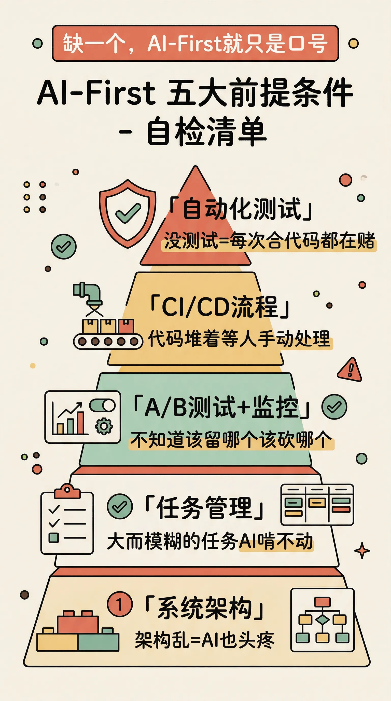
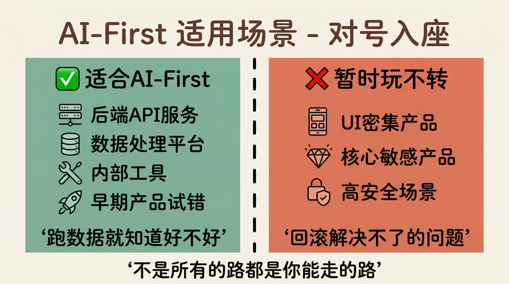
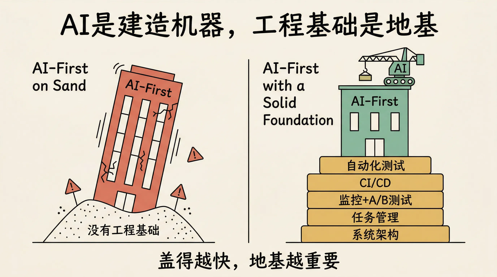

前两天刷推的时候，看到一篇文章被转了好几轮。
标题叫「Why Your AI-First Strategy Is Probably Wrong」，作者是一个叫 Peter Pang 的哥们，之前在 Meta 做过 LLaMA，现在自己创业做一个 Agent 平台叫 CREAO。25 个人的小团队。
这篇文章之所以炸了，是因为他说了一句让所有人都坐不住的话，99% 的生产代码都是 AI 写的。
不是那种「我用 Copilot 补全了几行代码」的 99%。是那种「周二早上 10 点上了一个新功能，中午 12 点 A/B 测试跑完，下午 3 点数据不好直接砍掉，5 点又上了一个更好的版本」的 99%。
三个月前，这样一个周期要六周。
我第一反应是，卧槽。
第二反应是，等等，这也太理想化了吧。
然后我把整篇文章从头到尾读了两遍。说真的，读完之后我的感受很复杂。一方面，我是真的被他描述的那套系统给震到了。另一方面，又隐隐觉得哪里不对劲。
后来宝玉老师发了一条推，一句话把我那个「不对劲」的感觉给精准地点出来了。
他说，与其说 AI First，不如说软件工程 First。
这篇文章看着在讲 AI，底下全是软件工程。
我当时就愣住了。
对啊。
你仔细看 Peter Pang 描述的那套系统。每一行代码提交之后要过什么？六阶段流水线，类型检查、代码规范、单元测试、集成测试、端到端测试、环境一致性检查。一个都不能少，不能手动跳过，整条流水线是确定性的。
每个 PR 会触发三轮 AI 审查，代码质量一轮，安全漏洞一轮，依赖风险一轮。不是建议，是卡口。
每天早上 9 点，自动化健康巡检启动。Claude Sonnet 去查 CloudWatch，分析所有服务的错误模式，生成一份报告推到团队群里。一个小时后，分诊引擎启动，把生产环境的错误按九个维度打分，自动创建工单，带上日志、受影响用户、受影响接口、建议排查路径。
如果一个已经关闭的问题又出现了，系统自动检测到回归，重新打开。
工程师推了修复之后，同样的流水线再跑一遍。修复生效了，工单自动关闭。

你看，这整套东西，拆开来看每一块都不是什么新发明。CI/CD、自动化测试、feature flag、A/B 测试、灰度发布、自动回滚、结构化日志、监控告警。
这些东西在软件工程里已经存在了多少年了？
十年？二十年？
只不过以前是「我们知道应该这么做但一直没做到」，现在 AI 把实现速度拉到了一天好几次部署，你不做就真的撑不住了。
我觉得这才是这篇文章真正有意思的地方。
它表面上在说「我们如何用 AI 重建了一切」，其实在说「我们终于把那些一直想做但没动力做的工程改进给做了」。
AI 是催化剂，不是主角。

你想想看，Peter Pang 花了多少篇幅在讲 AI 有多牛逼？很少。他花了大量篇幅在讲什么？讲他怎么把散落在多个 repo 的代码合并成 monorepo，讲他怎么设计六阶段部署流水线，讲他怎么搭建自动化测试平台，讲他怎么用 feature flag 控制发布节奏。
这些全是软件工程的活。
AI 在这套系统里扮演的角色是什么？是执行者。写代码的是 AI，审代码的是 AI，做测试的是 AI，巡检日志的是 AI。但决定「什么应该被测试」「什么算合格」「什么时候该回滚」的，是人搭的那套系统。
这就像你雇了一个特别能干的实习生，一天能写一百个 PR。但如果你公司连 CI 都没有，代码提交了就直接上线，这个实习生越能干你死得越快。
这个比喻有点损但我觉得还挺准确的。
顺着这个角度再往下想，你会发现宝玉老师那条推真正厉害的地方，不只是看穿了文章的底层逻辑，而是他直接给你列了一张自检清单。
他说，先别急着照搬，先对照自己的情况想几件事。
第一，自动化测试。AI 改完代码，你得有办法确认它没搞崩别的功能。测试覆盖不够的话，每次 AI 提交代码你都得人工回归一遍，那速度根本快不起来。
我自己的感受是，这一条就已经卡死了大部分团队。坦率的讲，国内很多创业公司的测试覆盖率能有多少？20%？30%？有些可能连单元测试都不写。不是不知道应该写，是业务催得太紧，永远在赶下一个功能，测试的优先级永远排在后面。
结果呢？AI 写代码的速度是快了，但每次合进去你心里都没底。上一个功能没崩吧？支付流程还正常吧？只能拉个人手动点一遍。这一点就把 AI 带来的速度优势给吃了个干净。
第二，CI/CD 流程。从提交代码到部署上线，中间的测试、审查、发布、回滚，是不是全自动跑通了？
Peter Pang 的六阶段流水线看着很美对吧。但你现在的流水线长什么样？我见过不少团队，代码合并到主干之后，还得有人手动打包、手动部署、手动验证。有的甚至还在用微信群通知「我要部署了大家小心一下」。
这条流水线不通，AI 写得再快，代码也堆在那儿等人手动处理。就像高速公路修得再好，收费站还是人工扔硬币，后面堵一公里。
第三，A/B 测试和线上监控。新功能上线之后效果好不好，得有数据说话，效果不好得能随时关掉。
Peter Pang 说他们用 Statsig 做 feature flag，每个功能都在灰度后面。先给团队用，再给一部分用户用，数据好了全量推，不好了当天就砍。
没有这套机制，AI 一天给你产出五个功能，你都不知道哪个该留哪个该砍。全上？不敢。全不上？那 AI 写了个寂寞。只能靠 PM 拍脑袋挑两个上，然后祈祷。
第四，任务管理。任务得拆到合适的粒度，生命周期得跟踪得住。
这个其实是最容易被忽视的。一个大而模糊的任务丢给 AI，它啃不动的。「把用户体系优化一下」，这什么意思？优化哪里？标准是什么？AI 不知道你脑子里想的是什么。
但如果你把任务拆成「把注册流程的邮箱验证改成异步」「给登录接口加上 rate limiting」「用户资料页加一个头像上传功能」，每个都清晰、具体、可验证，AI 才能真正发挥出来。

这不是 AI 的问题，是项目管理的基本功。
第五，系统架构。架构太乱或者压根没有架构的代码，AI 维护起来跟人一样头疼。上下文塞满了还是搞不清边界在哪，改一处崩三处。
Peter Pang 自己也承认了这一点，他花了两周时间，先花一周设计新系统，再花一周用 Agent 重构整个代码库，把散落在多个独立系统的代码统一成了一个 monorepo。他说原因只有一个，让 AI 能看到全部代码。
分散的代码库对 AI 来说是不可见的。统一的代码库才是可读的。
你看，这又是一个软件工程的决策，不是 AI 的决策。
宝玉老师说，这几条里如果有做不到的，就得靠人去补。补不上，AI First 就只是一句口号。
我觉得这话说得有点刺耳，但确实是事实。

说到这个，我想再延伸一下宝玉没有展开讲的部分。他说了五个前提条件，但其实还有一个更底层的东西，他没有明说但字里行间都在暗示。
那就是，你得有人懂这些东西。
Peter Pang 自己是物理学博士，之前在 Meta 做 LLaMA，在 Apple 也待过。他不是一个「学了三个月编程然后用 AI 创业」的人。他是一个有深厚工程积累的人，碰巧赶上了 AI 这波浪。
他在文章里把未来的工程师分成两类。第一类叫 Architect，一两个人，设计整套系统的规则和标准。第二类叫 Operator，执行 AI 分配的任务，做 bug 排查、UI 微调、PR 审查这些具体工作。
他说了一句话我印象特别深，批评 AI 的能力，将比产出代码的能力更有价值。
。。。
这句话你细品。
它的意思是，AI 越强大，你越需要有人能看出 AI 哪里做得不对。AI 给你一个方案，你得有能力找到它的漏洞。它漏掉了什么故障模式？跨越了什么安全边界？积累了什么技术债？
这种能力不是用 Cursor 用出来的，是在真实的生产环境里踩了无数坑之后长出来的。
所以你看，AI-First 的前提不光是工程基础设施，还得有人。有能搭这套系统的人，有能持续质疑和改进这套系统的人。
这也是为什么我对「一人公司」的说法保持谨慎乐观。Peter Pang 说他相信一人公司会变得越来越常见，一个架构师加上一群 Agent 能做一百个人的活。
理论上没错。但那个「一个架构师」，得是什么水平的架构师？
回到宝玉老师的分析，他还提了一个很关键的点，就是这套打法的适用范围。
什么场景适合？后端逻辑为主、界面不复杂的产品。API 服务、数据处理平台、内部工具。功能好不好，跑一下数据就知道，不需要人去盯着每个像素。Peter Pang 的 CREAO 就是个 Agent 平台，天生适合这套打法。
再比如早期产品快速试错，功能上了不行就撤，用户预期本来就没那么高，AI 的速度优势能充分发挥。
但很多场景玩不转。
比如 UI 密集的产品。自媒体天天喊前端已死，但你让 AI 做个复杂界面试试。各种易用性问题、交互细节、视觉还原，搞不定的。要不然马斯克靠 AI 早就改版 X 不知道多少次了。
比如对功能质量极度敏感的产品。Anthropic 和 OpenAI 不知道 AI First 吗？他们敢在 Claude Code 和 Codex 上让 AI 全自动迭代吗？核心产品这么搞，用户不骂死才怪。
再比如安全性要求高的场景。银行系统、在线交易平台，AI 代码出个差错，那可不是回滚能解决的。
我觉得宝玉老师这段分析特别冷静。因为很多人看完 Peter Pang 的文章之后，第一反应就是「我也要这么搞」。但你得先问自己，你的产品形态允许吗？你的用户容错度够吗？你的行业监管让你这么做吗？
不是所有的路都是你能走的路。

但这不代表这篇文章没有价值。恰恰相反。
我觉得 AI-First 这个概念最大的价值，不在于「让 AI 干所有的活」这个终态，而在于它提供的那个思维框架。
每做一个决策的时候，想一想，这件事能不能让 AI 来做？
如果不能，缺什么条件？怎么把条件补上？
你会发现，当你认真问这个问题的时候，答案往往不是「去买一个更贵的 AI 工具」，而是「我们的测试得先补上」「我们的部署流程得先自动化」「我们的代码架构得先理一理」。
都是欠了很久的债。
AI 只是那个让你不得不还债的催债人。
我想起一个比喻。AI 是一台特别快的建造机器，一天能盖十层楼。但如果地基是沙子做的，盖得越快塌得越快。
所以 AI-First 的正确打开方式，不是先去研究最新的模型发布了什么能力，而是先回头看看自己的工程地基。测试、CI/CD、监控、架构、任务管理，哪些还欠着债？
说实话我也不确定自己的理解是不是完全对。但有一点我越来越笃定，就是这波 AI 浪潮最终会倒逼出一场软件工程的集体补课。
以前没动力做的事，现在不做不行了。
以前觉得「测试覆盖率低一点也能凑合跑」的团队，现在发现凑合不了了，因为 AI 一天给你提二十个 PR，你没有自动化测试就等着爆炸吧。
以前觉得「手动部署慢是慢点但也没出过大事」的团队，现在发现慢不起了，因为竞争对手一天部署八次，你一周部署一次。
以前觉得「架构乱就乱点反正我们自己人能看懂」的团队，现在发现看懂不够了，因为 AI 看不懂你的架构，它就没法帮你。
从这个角度看，AI-First 最大的红利，可能不是 AI 本身，而是它逼着你把一直想做但没动力做的工程改进，真正推动起来。

宝玉老师在那条推的最后说了一句话。
仰望星空是好的，但也还要脚踏实地。
这话听着像鸡汤。但对照 Peter Pang 那篇文章一看，你会发现这就是事实。
他仰望的是「99% 代码由 AI 写」的星空。他脚踏的是六阶段流水线、三轮 AI 审查、九维度错误评分、自动化工单创建与关闭的实地。
没有后者，前者就是空中楼阁。
大时代啊，朋友们。
每个人都在喊 AI-First，但真正做到的人在做的事，看着一点都不酷。搭测试、通流水线、理架构、建监控。
最不性感的事，往往是最重要的事。
相关链接